Geocentric Models
EES 5891-03
Bayesian Statistical Methods
Jonathan Gilligan
Class #4: Tuesday, September 6 2022
Announcement
- Reading assignments changed
- No new reading for Thursday
- I will spend the class talking about using R and RStudio
- Bring your laptop if you have one, so you can work along with me.
- Get a head-start on reading for next week
- I will spend the class talking about using R and RStudio
- For next week, I have split the reading for Chapter 5 into two days
- Homework due next Tuesday is just from Chapter 4 (Geocentric models)
- No new reading for Thursday
Big Picture
Characteristics of Models
- Parametric regression models
- Linear regression
- Polynomial regression
- Generalized linear models
- Nonlinear models
- Nonparametric regression models
- Spline models
- Locally-weighted regression
- Gaussian process models
- …
- Comparison
- Which fits the data best?
- Which would be best for interpolating?
- Which would be best for extrapolating?
- Parametric models:
-
Linear
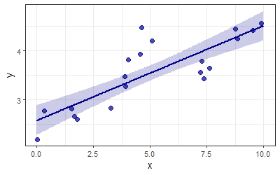
-
- Nonparametric
-
Locally weighted (LOWESS)
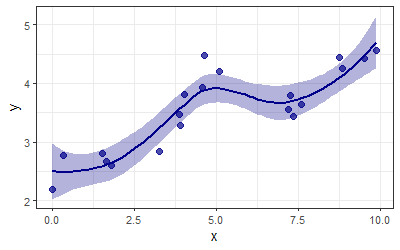
-
Spline
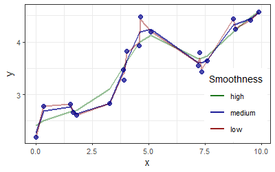
-
Underfitting vs. Overfitting
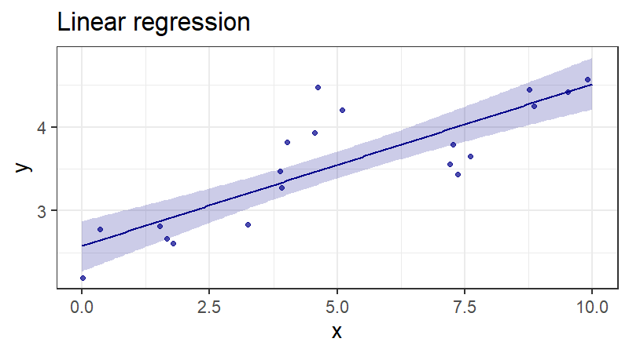
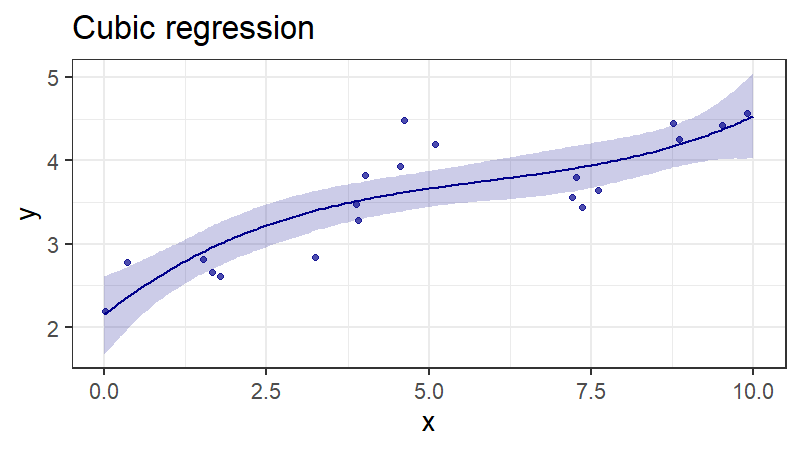
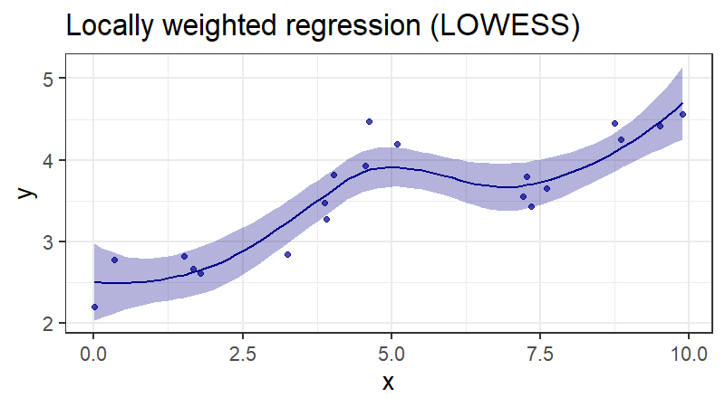
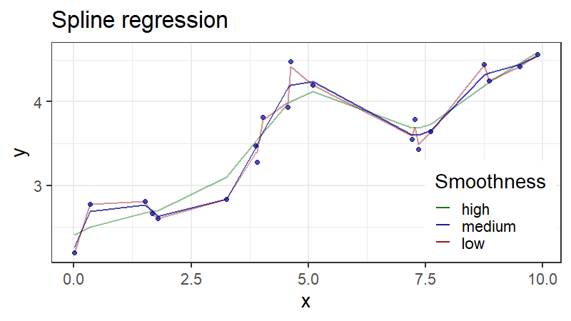
Example from Physics
- Two physicists studying ionization of atoms by microwaves
- The spectrum was very complicated
- Tom Gallagher (University of Virginia)
- Simple model with five parameters.
- Fit the overall pattern very well, but did not attempt to fit every little bump and wiggle.
- Simple model with five parameters.
- Peter Koch (SUNY Stony Brook)
- Complicated model:
- Chaos theory, very hard to understand.
- Huge computational demands
- Fit all the details of the spectrum almost perfectly
- Complicated model:
- Koch and Gallagher spent years fighting fiercely about whose approach to modeling was better.
-
Tom Gallagher
-
Peter Koch
Central Limit Theorem
- Take N independent measurements of a variable x
- Some distribution with mean \(\mu\), variance \(\sigma^2\)
- In the limit of large N, The average will be normal with mean \(\mu\) and variance \(\sigma^2 / N\)
- This also works for:
- Product of \(1 + x\) for small \(x\)
- \(\log(\text{product} (1 + x))\) for larger \(x\)
A Language for Models
A Recipe for Models
- Recognize and categorize variables
- Data: Observable variables (\(x\), \(y\))
- Parameters: Latent (unobservable) variables (\(\mu\), \(\alpha\), \(\beta\), \(\sigma\))
- Define each variable
- Functional relations between variables (\(\mu\))
- Probability distributions (\(y\), \(\alpha\), \(\beta\), \(\sigma\))
- Combine variables & relations in a joint generative
model
- Analyze real observations (model fitting)
- Simulate hypothetical observations (predictions)
- Notation for models (example) \[ \begin{aligned} y &\sim \text{Normal}(\mu, \sigma) \\ \mu &= \alpha + \beta x \\ \alpha &\sim \text{Normal}(0, 10) \\ \beta &\sim \text{Normal}(0, 10) \\ \sigma &\sim \text{Exponential(1)} \\ \end{aligned} \]
- “\(\sim\)” means a
stochastic (random probabilistic) relationship
- \(x \sim \text{Normal}(0, 1)\) means that \(x\) is a stochastic variable, which is drawn at random from a Normal distribution.
More Model Terminology
- In Bayesian terms:
- stochastic relationships that define parameters are priors (\(\alpha\), \(\beta\), \(\gamma\), \(\sigma\))
- stochastic relationships that define observed variables are likelihoods that contribute to calculating posteriors via Bayes’s theorem.
- When parameters (\(\beta_i\)) are defined by priors
that have their own parameters (\(\gamma\)),
- the parameters in the priors are hyperparameters (\(\gamma\)),
- the priors for hyperparamters are hyperpriors.
- Notation for models (example) \[ \begin{aligned} y &\sim \text{Normal}(\mu, \sigma) \\ \mu &= \alpha + \sum_i \beta_i x_i \\ \alpha &\sim \text{Normal}(0, 10) \\ \beta_i &\sim \text{Normal}(\gamma, 1) \\ \gamma &\sim \text{Normal}(0, 10) \\ \sigma &\sim \text{Exponential(1)} \end{aligned} \]
Case Study: Height
Height Data
- Anthropological data
- !Kung San people
- R data structures:
- 1-dim:
vector,list - 2-dim:
array,matrix,data.frame,tibble(a kind ofdata.frame) - n-dim:
array,matrix data.frame,tibble:- Like a spreadsheet or database:
- Each column is a variable
- height, weight, etc.
- Each row is a set of related measurements
- height, weight, etc. for a given person
- Each column is a variable
- Like a spreadsheet or database:
- 1-dim:
library(pacman)
p_load(tidyverse, tidybayes)
p_load_gh(c("mcelreath/rethinking",
"mjskay/tidybayes.rethinking"))
data(Howell1)
d <- tibble(Howell1)
head(d)## # A tibble: 6 × 4
## height weight age male
## <dbl> <dbl> <dbl> <int>
## 1 152. 47.8 63 1
## 2 140. 36.5 63 0
## 3 137. 31.9 65 0
## 4 157. 53.0 41 1
## 5 145. 41.3 51 0
## 6 164. 63.0 35 1## mean sd 5.5% 94.5%
## height 138.2635963 27.6024476 81.108550 165.73500
## weight 35.6106176 14.7191782 9.360721 54.50289
## age 29.3443934 20.7468882 1.000000 66.13500
## male 0.4724265 0.4996986 0.000000 1.00000
## histogram
## height ▁▁▁▁▁▁▁▂▁▇▇▅▁
## weight ▁▂▃▂▂▂▂▅▇▇▃▂▁
## age ▇▅▅▃▅▂▂▁▁
## male ▇▁▁▁▁▁▁▁▁▇Cleaning data
- Many children
- Focus on adults
- Model: \[
\begin{align}
h &\sim \text{Normal}(\mu,\sigma) \\
\mu &\sim \text{Normal}(178, 20) \\
\sigma &\sim \text{Uniform}(0, 50)
\end{align}
\]
- Where does Normal(178,20) come from?
- If a
quapmodel gives errors, you may need to give it a hint about where to start looking for the mode of the posterior.
## mean sd 5.5% 94.5%
## height 154.59709 7.7423321 142.8750 167.00500
## weight 44.99049 6.4567081 35.1375 55.76588
## age 41.13849 15.9678551 20.0000 70.00000
## male 0.46875 0.4997328 0.0000 1.00000
## histogram
## height ▁▃▇▇▅▇▂▁▁
## weight ▁▅▇▇▃▂▁
## age ▂▅▇▅▃▇▃▃▂▂▂▁▁▁▁
## male ▇▁▁▁▁▁▁▁▁▇Linear Models
- We expect that height is related to other variables (weight, age,
sex)
- Start by looking for an association with weight \[ \begin{align} h &\sim \text{Normal}(\mu, \sigma) \\ \mu &= \alpha + \beta (w - \bar w) \\ \alpha &\sim \text{Normal}(178, 20) \\ \beta &\sim \text{Normal}(0, 10) \\ \sigma &\sim \text{Uniform}(0,50) \end{align} \] where \(h\) is height and \(w\) is weight
Choosing Priors
- Our previous model has a prior for \(\beta\) of Normal(0,50).
- \(\beta\) is the relationship between weight and height.
- Is it really plausible that the slope is as likely to be negative as positive?
- Plot some examples of the prior
- Try a different prior:
- Lognormal distribution
- Good when the parameter must be positive \[ \log(\beta) \sim \text{Normal(0,1)} \]
b ~ dlnorm(0, 1)`
- Good when the parameter must be positive \[ \log(\beta) \sim \text{Normal(0,1)} \]
- Lognormal distribution
wbar <- mean(d2$weight)
priors <- tibble(a = rnorm(100, 178, 20), b = rnorm(100, 0, 10))
p <- ggplot()
for (i in seq(nrow(priors))) {
params <- priors[i,]
d_tmp <- mutate(d2, x = weight, y = params$a + params$b * (weight - wbar))
p <- p + geom_line(data = d_tmp, aes(x = x, y = y),
color = "darkblue", alpha = 0.2)
}
p <- p + geom_hline(yintercept = 0, linetype = "dashed", size = 0.5) +
geom_hline(yintercept = 272, size = 0.5) +
labs(x = "weight", y = "height", title = "b ~ Normal(0, 10)")
p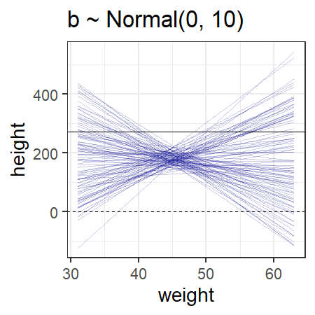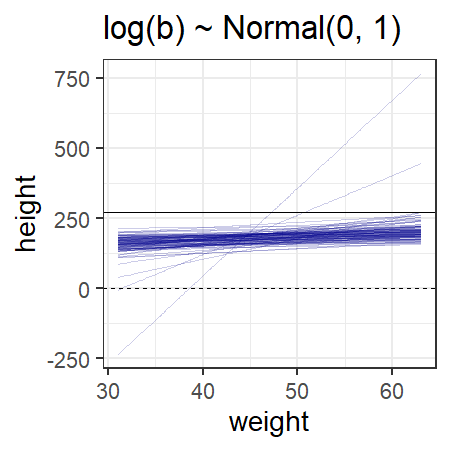
Finishing our model
- Model: \[ \begin{align} h &\sim \text{Normal}(\mu, \sigma) \\ \mu &= \alpha + \beta (w - \bar w) \\ \alpha &\sim \text{Normal}(178, 20) \\ \log(\beta) &\sim \text{Normal}(0, 1) \\ \sigma &\sim \text{Uniform}(0, 50) \end{align} \]
- Check the variance-covariance matrix
- Off-diagonal elements are < 0.001:
- Very little covariance among the parameters. This is good.
- Off-diagonal elements are < 0.001:
flist_lin <- alist(
height ~ dnorm(mu, sigma),
mu <- a + b * (weight - wbar),
a ~ dnorm(178, 20),
b ~ dlnorm(0, 1),
sigma ~ dunif(0, 50)
)
lin_mdl <- quap(flist_lin, data = d2)
round(precis(lin_mdl), 2)## mean sd 5.5% 94.5%
## a 154.60 0.27 154.17 155.03
## b 0.90 0.04 0.84 0.97
## sigma 5.07 0.19 4.77 5.38Checking Models
Checking fit
post <- extract.samples(lin_mdl)
map <- summarize(post, a = median(a), b = median(b))
map_line = tibble(weight = range(d2$weight),
height = map$a + map$b * (weight - wbar))
ggplot(d2, aes(x = weight, y = height)) +
geom_line(data = map_line, size = 1, color = "black") +
geom_point(size = 2, color = "darkblue", alpha = 0.2) +
labs(x = "weight", y = "height")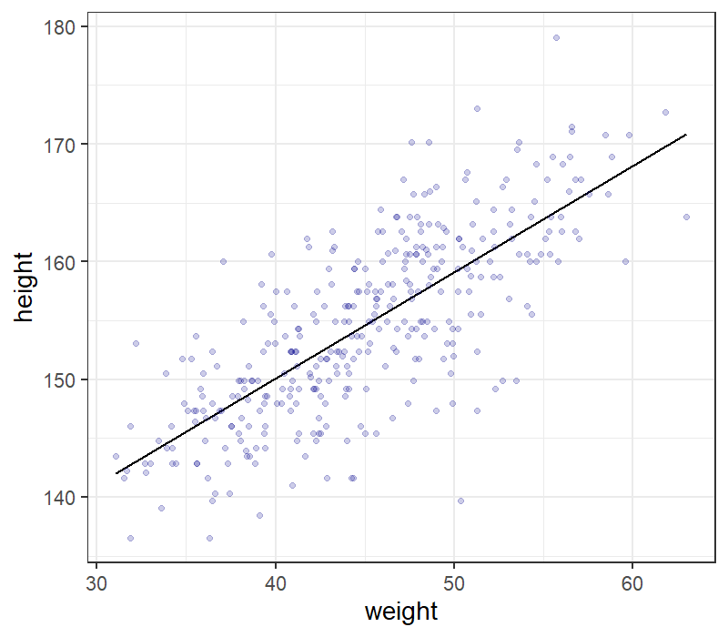
Fit Subsets of Data
f <- function(N) {
dN <- slice_head(d2, n = N)
mN <- quap(flist_lin, data = dN)
post <- extract.samples(mN, n = 20)
p <- ggplot(dN, aes(x = weight, y = height)) +
geom_point(size = 3, color = "darkblue", alpha = 1.5 / log(N))
for (i in seq(20)) {
map <- post[i,]
map_line = tibble(weight = range(d2$weight),
height = map$a + map$b * (weight - wbar))
p <- p + geom_line(data = map_line, color = "black", alpha = 0.3)
}
p <- p + labs(x = "weight", y = "height", title = str_c("N = ", N))
p
}
p1 <- f(10)
p2 <- f(50)
p3 <- f(150)
p4 <- f(nrow(d2))
p1 + p2 + p3 + p4 + plot_layout(ncol = 2)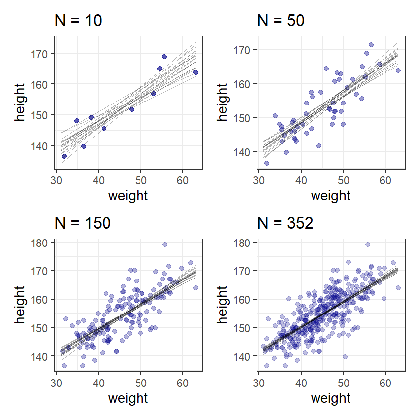
Compatibility Intervals
new_data <- tibble(weight = seq(25, 70, 1))
post <- linpred_draws(lin_mdl, new_data, value = "height")
post_sum <- post %>% group_by(weight, .row) %>%
summarize(lower = quantile(height, 0.055),
upper = quantile(height, 0.945),
height = mean(height)) %>% ungroup()
p1 <- ggplot(slice_head(post, n = 100), aes(x = weight, y = height)) +
geom_point(size = 2, alpha = 0.02, color = "darkblue") +
labs(x = "weight", y = "height")
p2 <- ggplot(d2, aes(x = weight, y = height)) +
geom_point(size = 2, color = "darkblue", alpha = 0.3) +
geom_smooth(data = post_sum, aes(ymin = lower, ymax = upper),
stat = "Identity",
color = "darkgreen", fill = "darkgreen", alpha = 0.2) +
labs(x = "weight", y = "height")
p1 + p2 + plot_layout(nrow = 2)- The top graph shows samples of 100 points drawn from the posterior predictions
- The bottom shows the actual data together with the best-fit line, and the 89% compatibility interval for the line

Checking predictions
post <- predicted_draws(lin_mdl, new_data, value = "height")
post_sum <- post %>% group_by(weight, .row) %>%
summarize(lower = quantile(height, 0.055),
upper = quantile(height, 0.945),
height = mean(height)) %>% ungroup()
p2 <- ggplot(d2, aes(x = weight, y = height)) +
geom_point(size = 2, color = "darkblue", alpha = 0.3) +
geom_smooth(data = post_sum, aes(ymin = lower, ymax = upper),
stat = "Identity",
color = "darkgreen", fill = "darkgreen", alpha = 0.2) +
labs(x = "weight", y = "height")
p2- The graph shows the actual data together with the best-fit line, and
the 89% compatibility interval for the predictions of where we will see
data points.
- 89% of the observed data should lie within this interval.
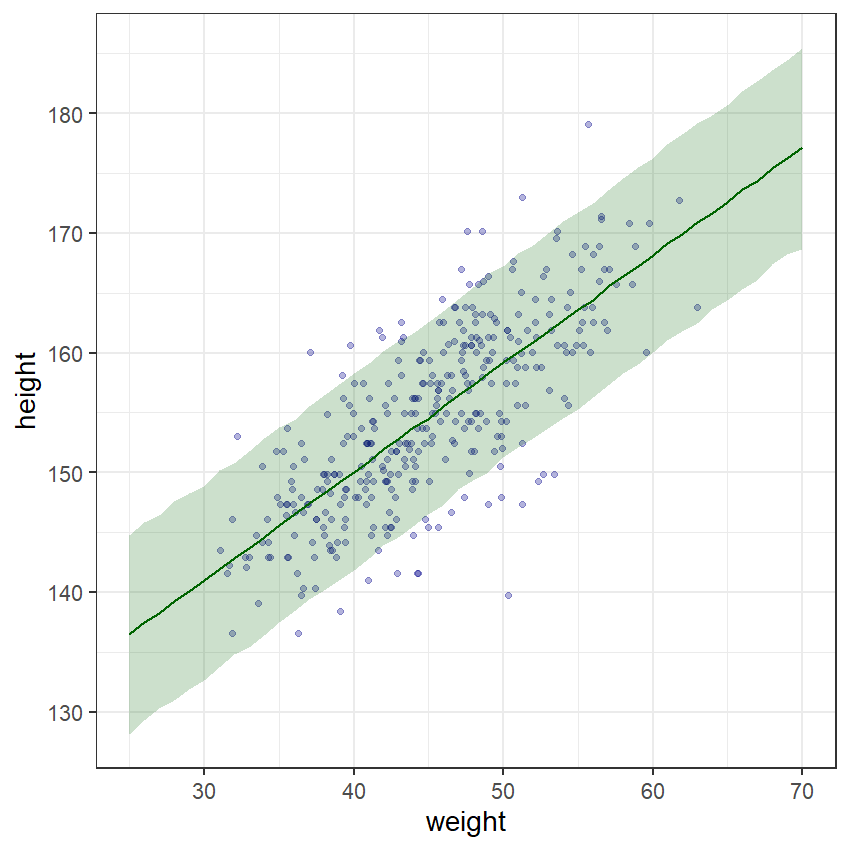
Polynomial Models
Beyond Linear Models
- Sometimes linear models aren’t good enough.
- If we include children, height is no longer a linear function of weight.
- Polynomial models (quadratic, cubic, etc.) may be better.
- High powers of variables can get large, so standardize your data \[ x_s = \frac{x - \bar x}{\sigma_x},\] where \(\bar x\) is the mean of \(x\) and \(\sigma_x\) is the standard deviation.
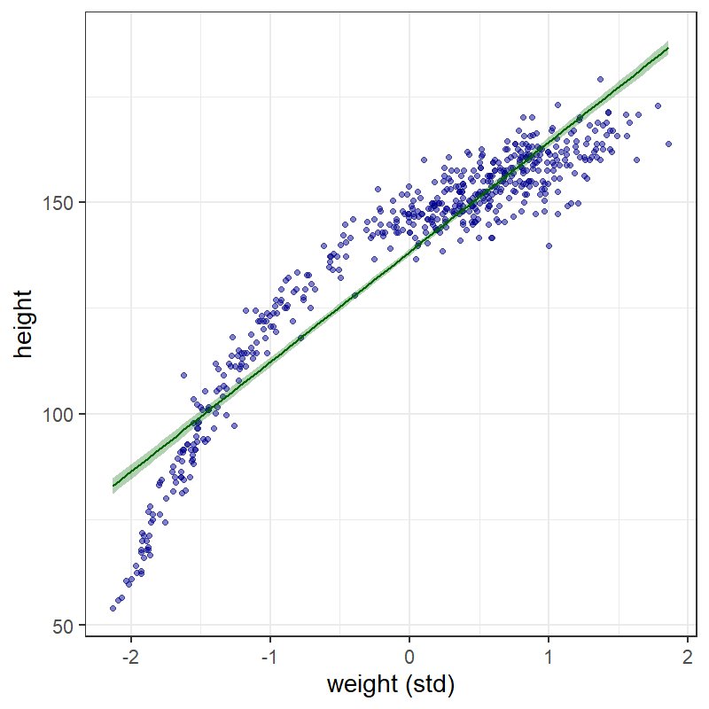
Polynomial Regression
-
Model:
\[ \begin{align} h &\sim \text{Normal}(\mu, \sigma) \\ \mu &= \alpha + \beta_1 w_s + \beta_2 w_s^2 \\ \alpha &\sim \text{Normal}(178,20) \\ \beta_1 &\sim \text{Log-Normal}(0,1) \\ \beta_2 &\sim \text{Normal}(0, 1) \\ \sigma &\sim \text{Uniform}(0,50) \end{align} \]
- For computational efficiency, make a new variable \(ws2 = ws^2\).
d_std <- mutate(d, ws = (weight - mean(weight)) / sd(weight),
ws2 = ws^2)
flist_lin_s <- alist(
height ~ dnorm(mu, sigma),
mu <- a + b * ws,
a ~ dnorm(178, 20),
b ~ dlnorm(0,1),
sigma ~ dunif(0,50)
)
lin_mdl_s <- quap(flist_lin_s, data = d_std)
flist_quad_s <- alist(
height ~ dnorm(mu, sigma),
mu <- a + b1 * ws + b2 * ws2,
a ~ dnorm(178, 20),
b1 ~ dlnorm(0,1),
b2 ~ dnorm(0,1),
sigma ~ dunif(0,50)
)
quad_mdl_s <- quap(flist_quad_s, data = d_std)
precis(quad_mdl_s)## mean sd 5.5% 94.5%
## a 146.058287 0.3689854 145.468577 146.647997
## b1 21.732530 0.2888988 21.270814 22.194246
## b2 -7.803573 0.2741922 -8.241785 -7.365361
## sigma 5.774713 0.1764832 5.492659 6.056767Different polynomials
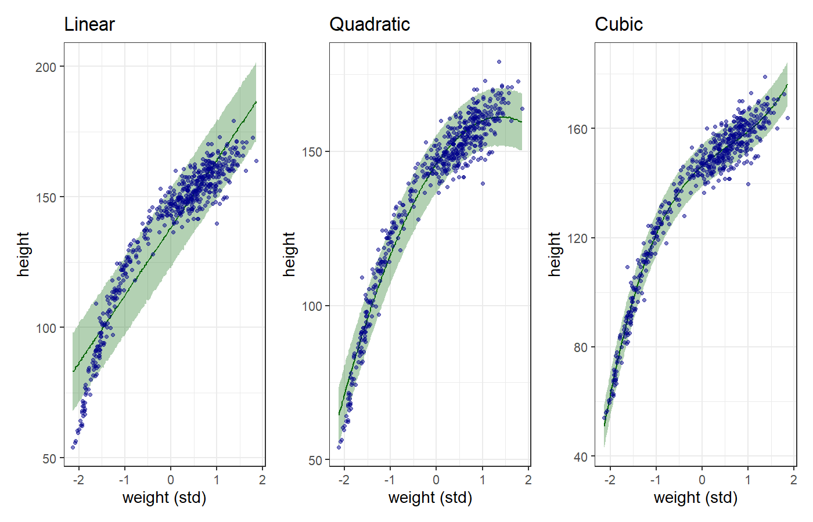